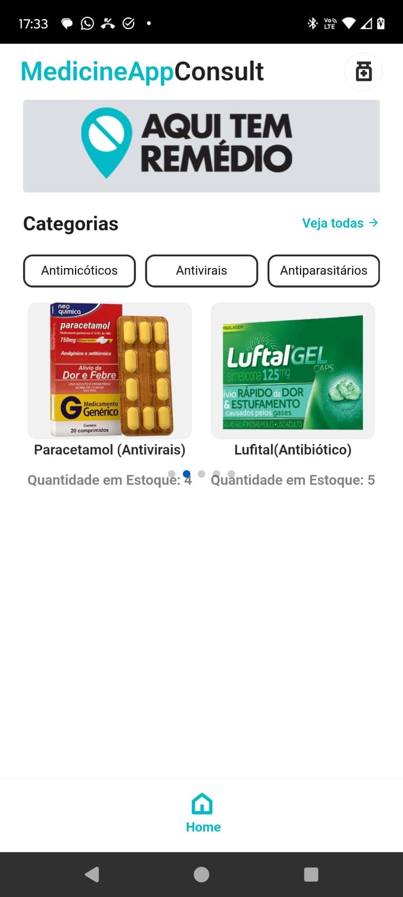

A equipe da Tecnologia junto com Washington Santos, gerente comercial da farmácia em reunião para apresentar o Projeto de Software.
A nossa equipe projetou um software para facilitar o acesso a medicamentos, melhorar a comunicação entre farmácias e clientes, e otimizar a gestão de estoque e pedidos. A comunidade vai se beneficiar com o acesso rápido e fácil a medicamentos essenciais, redução no tempo de espera e deslocamento, além de informações confiáveis sobre saúde e medicamentos.
Para as farmácias, o software proporcionará um aumento na eficiência operacional, uma melhoria significativa no atendimento ao cliente e a redução de perdas por vencimento de medicamentos. Essas melhorias contribuirão para um serviço mais eficaz e sustentável

A equipe da Tecnologia junto com Washington Santos, gerente comercial da farmácia em reunião para apresentar o Projeto de Software.
A equipe de Tecnologia observando a dificuldade e ouvindo as necessidades do paciente.
A Sra. Aline Bueno com a Thais, dando o seu depoimento referente a falta de medicamentos e direcionamento sobre onde encontrar.
O grupo de TI reunido no desenvolvimento do projeto e do relatório final.